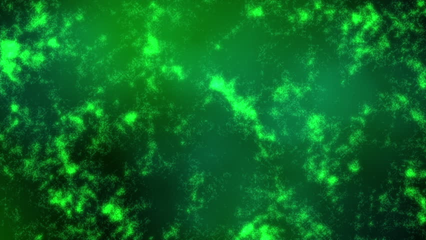

Madame Curie
Breif About
Marie Skłodowska Curie ,born Maria Salomea Skłodowska 7 November 1867 – 4 July 1934), was a Polish and naturalized-French physicist and chemistwho conducted pioneering research on radioactivity. She was the first woman to win a Nobel Prize, the first person andthe only woman to win the Nobel Prize twice, and the only person to win the Nobel Prize in two different scientific fields. She was part of the Curie family legacy of five Nobel Prizes. She was also the first woman to become a professor at the University of Paris, and in 1995 became the first woman to be entombed on her own merits in the Panthéon in Paris.
She was born in Warsaw, in what was then the Kingdom of Poland, part of the Russian Empire. She studied at Warsaw's clandestine Flying University and began her practical scientific training in Warsaw. In 1891, aged 24, she followed her elder sister Bronisława to study in Paris, where she earned her higher degrees and conducted her subsequent scientific work. She shared the 1903 Nobel Prize in Physics with her husband Pierre Curie and physicist Henri Becquerel. She won the 1911 Nobel Prize in Chemistry.
Honors
- Nobel Prize in Physics (1903, with her husband Pierre Curie and Henri Becquerel)
- Davy Medal (1903, with Pierre)
- Matteucci Medal (1904, with Pierre)
- Actonian Prize(1907)
- Elliott Cresson Medal (1909
- Nobel Prize in Chemistry (1911)
- Franklin Medal of the American Philosophical Society
Family Legacy
The Curie family has received the most prizes, with four prizes awarded to five individual laureates. Marie Curie received the prizes in Physics (in 1903) and Chemistry (in 1911). Her husband, Pierre Curie, shared the 1903 Physics prize with her. Their daughter, Irène Joliot-Curie, received the Chemistry Prize in 1935 together with her husband Frédéric Joliot-Curie. In addition, the husband of Marie Curie's second daughter, Henry Labouisse, was the director of UNICEF when he accepted the Nobel Peace Prize in 1965 on that organisation's behalf.